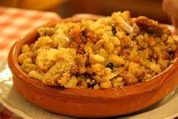
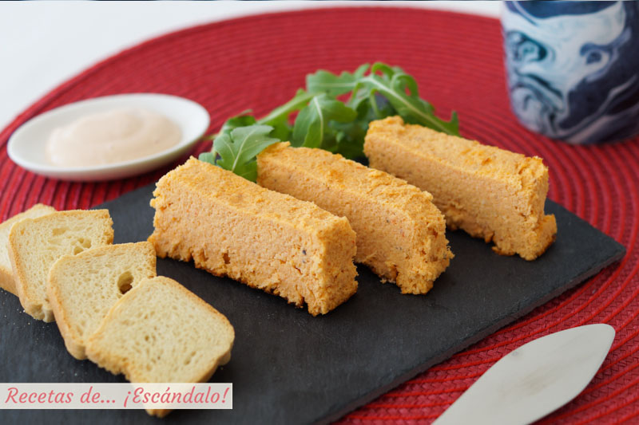
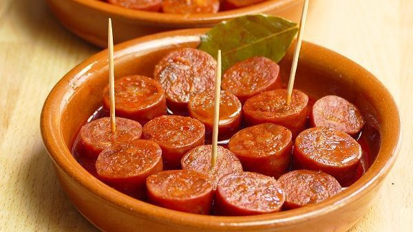
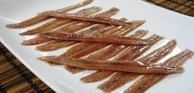
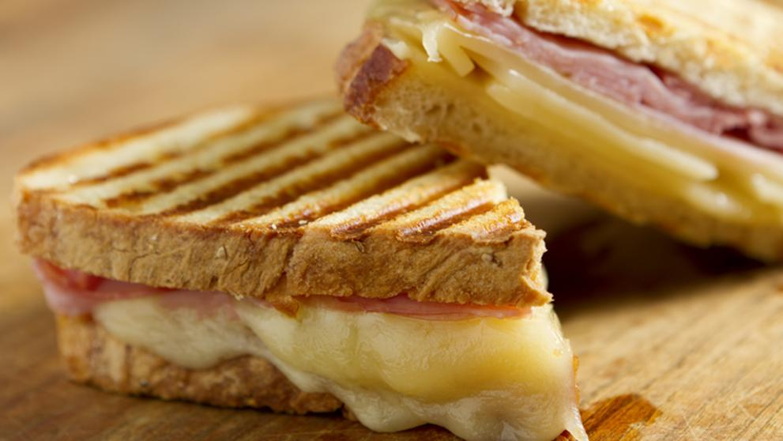
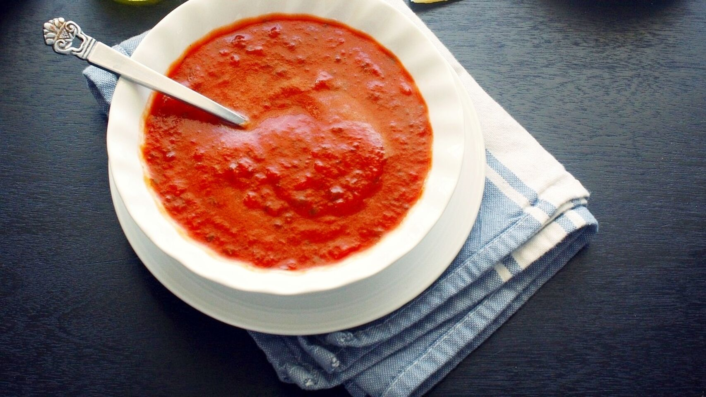
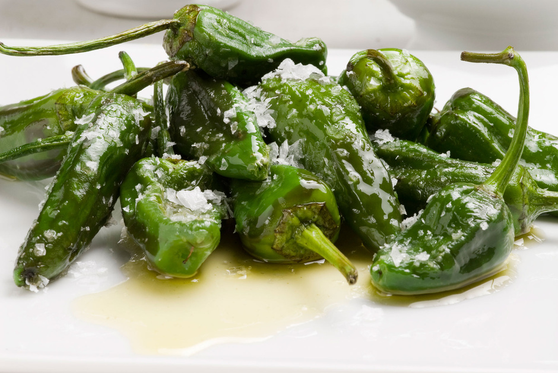
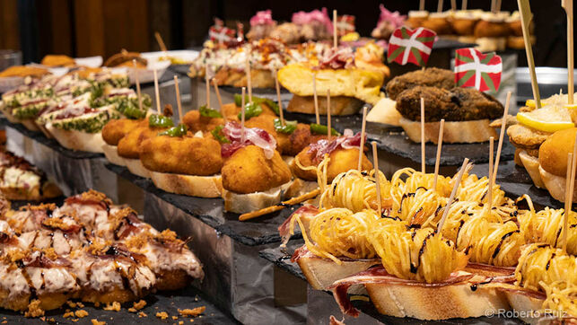
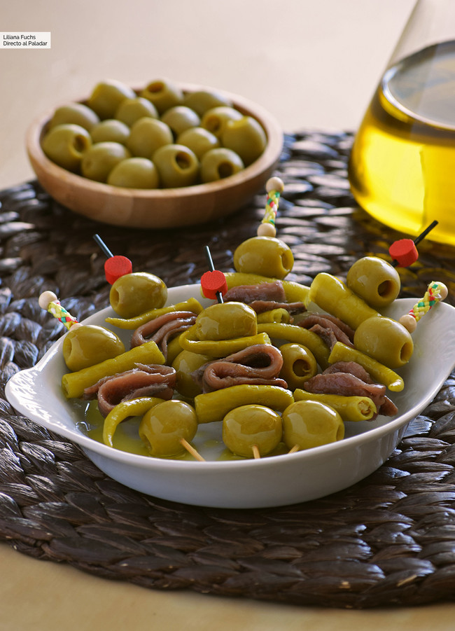
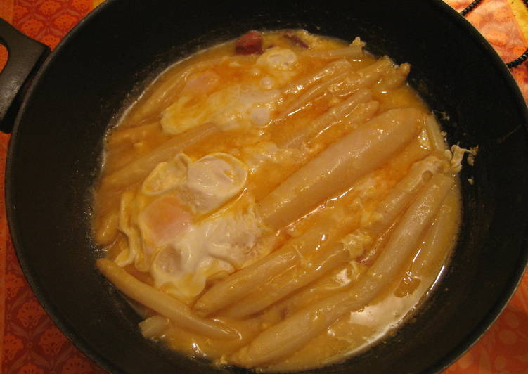

ULTRAINSTINTO
Inicio
Acerca de
Servicios
Contacto
Ser Usuario
¿Qué comemos para picar?
Platos:
Migas Aragonesas

Pastel de cabracho

Chorizo a la sidra

Anchoas de Santoña

Pan tumaca
Bikini

Calçots con salsa

Pimientos de Padrón

Pintxos

Gildas

Esparragos
